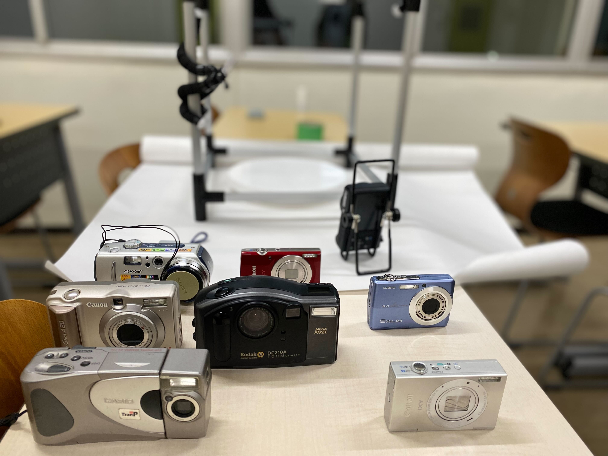

祝祭と霽れ
TTWCD
本田 剛己
お盆、例大祭、元旦……祝祭はある周期をもって開かれる。僕らはそのたびにカメラを持ち、その時々の自らを記録してきたはずだ。
今年21になった僕にとって、コンパクトデジタルカメラで撮影された映像はまさに「子供の頃」のものである。スマホほど手軽でもなく、フィルムカメラほど大仰でもないこの写真機で撮られた黄ばんだ写真を見るたびに僕は懐かしさを覚えるのだ。
今回はあえて古いコンデジで人を撮影し、フォトグラメトリとして立体化した。本来高い画質を要求されるフォトグラメトリにおいて、古くガタのきたコンデジで撮影した画像ではうまく立体化が行われない。しかし、あえてそのまま展示し、そのカメラの写す現在を示すこととした。
P.S.
撮影にあたってモデルを担当してくれた香取くんに、この場を借りてお礼を申し上げます。
今年21になった僕にとって、コンパクトデジタルカメラで撮影された映像はまさに「子供の頃」のものである。スマホほど手軽でもなく、フィルムカメラほど大仰でもないこの写真機で撮られた黄ばんだ写真を見るたびに僕は懐かしさを覚えるのだ。
今回はあえて古いコンデジで人を撮影し、フォトグラメトリとして立体化した。本来高い画質を要求されるフォトグラメトリにおいて、古くガタのきたコンデジで撮影した画像ではうまく立体化が行われない。しかし、あえてそのまま展示し、そのカメラの写す現在を示すこととした。
P.S.
撮影にあたってモデルを担当してくれた香取くんに、この場を借りてお礼を申し上げます。